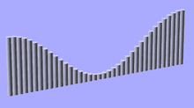

The trig functions use the C Language mathematics functions, which are based in turn on Binary Floating Point mathematics, which use approximations of Real Numbers during calculation. OpenSCAD's math functions use the C++ 'double' type, inside Value.h/Value.cc,
A good resource for the specifics of the C library math functions, such as valid inputs/output ranges, can be found at the Open Group website math.h & acos
Mathematical cosine function of degrees. See Cosine
Parameters
Usage Example: |
|
for(i=[0:36]) |
 |
Created with the Personal Edition of HelpNDoc: Produce online help for Qt applications